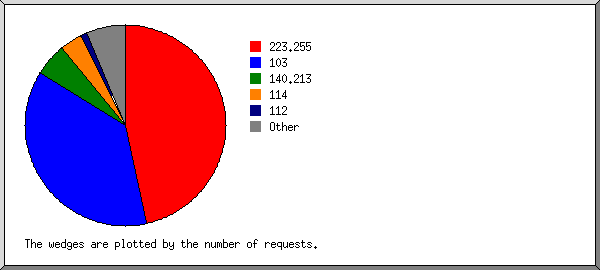
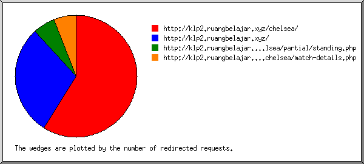
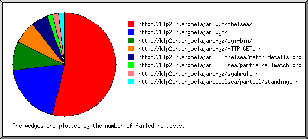
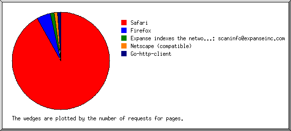
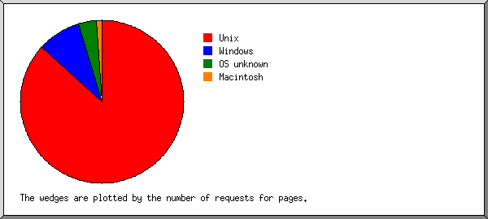
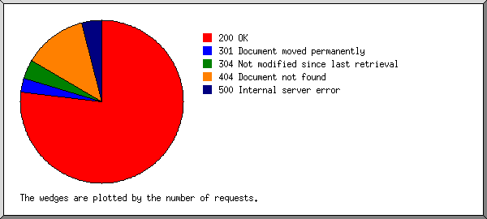
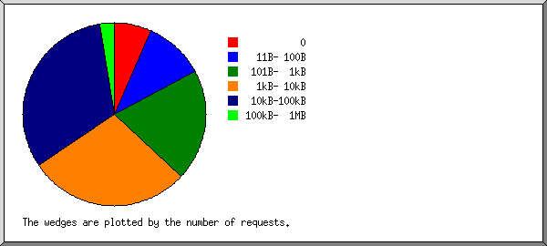
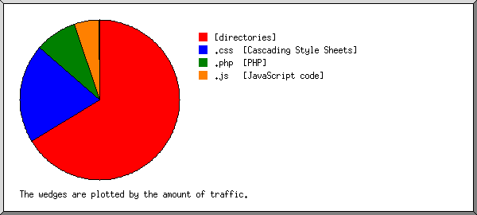
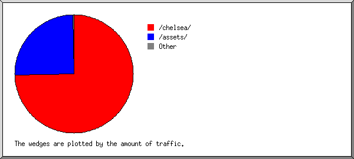
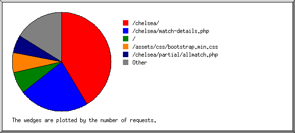

Web Server Statistics for klp2.ruangbelajar.xyz
Web Server Statistics for klp2.ruangbelajar.xyz
Program started on Sat, Oct 16 2021 at 3:12 PM.
Analyzed requests from Fri, Oct 01 2021 at 12:41 PM to Sat, Oct 16 2021 at 11:50 AM (14.96 days).
Web Server Statistics for klp2.ruangbelajar.xyzProgram started on Sat, Oct 16 2021 at 3:12 PM.
Analyzed requests from Fri, Oct 01 2021 at 12:41 PM to Sat, Oct 16 2021 at 11:50 AM (14.96 days).
(Go To: Top | General Summary | Monthly Report | Daily Summary | Hourly Summary | Domain Report | Organization Report | Redirected Referrer Report | Failed Referrer Report | Referring Site Report | Browser Report | Browser Summary | Operating System Report | Status Code Report | File Size Report | File Type Report | Directory Report | Request Report)
Figures in parentheses refer to the 7-day period ending Oct 16 2021 at 3:12 PM.
Successful requests: 596 (369)
Average successful requests per day: 39 (52)
Successful requests for pages: 289 (157)
Average successful requests for pages per day: 19 (22)
Failed requests: 123 (8)
Redirected requests: 21 (0)
Distinct files requested: 93 (111)
Distinct hosts served: 53 (65)
Data transferred: 11.69 megabytes (10.12 megabytes)
Average data transferred per day: 800.09 kilobytes (1.45 megabytes)
(Go To: Top | General Summary | Monthly Report | Daily Summary | Hourly Summary | Domain Report | Organization Report | Redirected Referrer Report | Failed Referrer Report | Referring Site Report | Browser Report | Browser Summary | Operating System Report | Status Code Report | File Size Report | File Type Report | Directory Report | Request Report)
Each unit ( ) represents 8 requests for pages or part thereof.
) represents 8 requests for pages or part thereof.
| month | #reqs | #pages | |
|---|---|---|---|
| Oct 2021 | 596 | 289 |   |
Busiest month: Oct 2021 (289 requests for pages).
(Go To: Top | General Summary | Monthly Report | Daily Summary | Hourly Summary | Domain Report | Organization Report | Redirected Referrer Report | Failed Referrer Report | Referring Site Report | Browser Report | Browser Summary | Operating System Report | Status Code Report | File Size Report | File Type Report | Directory Report | Request Report)
Each unit () represents 3 requests for pages or part thereof.
| day | #reqs | #pages | |
|---|---|---|---|
| Sun | 141 | 46 |  |
| Mon | 78 | 44 |   |
| Tue | 46 | 26 | |
| Wed | 14 | 7 | |
| Thu | 5 | 2 | |
| Fri | 113 | 32 | |
| Sat | 199 | 132 | |
(Go To: Top | General Summary | Monthly Report | Daily Summary | Hourly Summary | Domain Report | Organization Report | Redirected Referrer Report | Failed Referrer Report | Referring Site Report | Browser Report | Browser Summary | Operating System Report | Status Code Report | File Size Report | File Type Report | Directory Report | Request Report)
Each unit () represents 2 requests for pages or part thereof.
| hour | #reqs | #pages | |
|---|---|---|---|
| 0 | 2 | 2 | |
| 1 | 1 | 1 | |
| 2 | 0 | 0 | |
| 3 | 0 | 0 | |
| 4 | 0 | 0 | |
| 5 | 4 | 2 | |
| 6 | 1 | 1 | |
| 7 | 8 | 4 | |
| 8 | 56 | 49 | |
| 9 | 99 | 45 | |
| 10 | 82 | 29 | |
| 11 | 50 | 25 | |
| 12 | 87 | 49 | |
| 13 | 43 | 29 | |
| 14 | 33 | 8 | |
| 15 | 48 | 11 | |
| 16 | 30 | 16 | |
| 17 | 0 | 0 | |
| 18 | 8 | 4 | |
| 19 | 12 | 3 | |
| 20 | 5 | 2 | |
| 21 | 0 | 0 | |
| 22 | 27 | 9 | |
| 23 | 0 | 0 |
(Go To: Top | General Summary | Monthly Report | Daily Summary | Hourly Summary | Domain Report | Organization Report | Redirected Referrer Report | Failed Referrer Report | Referring Site Report | Browser Report | Browser Summary | Operating System Report | Status Code Report | File Size Report | File Type Report | Directory Report | Request Report)
Listing domains, sorted by the amount of traffic.
| #reqs | %bytes | domain |
|---|---|---|
| 596 | 100% | [unresolved numerical addresses] |
(Go To: Top | General Summary | Monthly Report | Daily Summary | Hourly Summary | Domain Report | Organization Report | Redirected Referrer Report | Failed Referrer Report | Referring Site Report | Browser Report | Browser Summary | Operating System Report | Status Code Report | File Size Report | File Type Report | Directory Report | Request Report)

Listing the top 20 organizations by the number of requests, sorted by the number of requests.
| #reqs | %bytes | organization |
|---|---|---|
| 277 | 42.50% | 223.255 |
| 222 | 32.92% | 103 |
| 32 | 11.41% | 140.213 |
| 21 | 7.73% | 114 |
| 7 | 2.26% | 112 |
| 5 | 3.07% | 203.78 |
| 4 | 0.02% | 34 |
| 4 | 0.02% | 167.248 |
| 3 | 0.01% | 125 |
| 2 | 180.253 | |
| 2 | 0.01% | 167.94 |
| 2 | 0.01% | 84 |
| 2 | 182.1 | |
| 1 | 0.01% | 185.150 |
| 1 | 0.01% | 31 |
| 1 | 52 | |
| 1 | 18 | |
| 1 | 203.29 | |
| 1 | 0.01% | 65.154 |
| 1 | 0.01% | 104 |
| 6 | 0.02% | [not listed: 6 organizations] |
(Go To: Top | General Summary | Monthly Report | Daily Summary | Hourly Summary | Domain Report | Organization Report | Redirected Referrer Report | Failed Referrer Report | Referring Site Report | Browser Report | Browser Summary | Operating System Report | Status Code Report | File Size Report | File Type Report | Directory Report | Request Report)

Listing referring URLs, sorted by the number of redirected requests.
| #reqs | URL |
|---|---|
| 10 | http://klp2.ruangbelajar.xyz/chelsea/ |
| 5 | http://klp2.ruangbelajar.xyz/ |
| 1 | http://klp2.ruangbelajar.xyz/chelsea/partial/standing.php |
| 1 | http://klp2.ruangbelajar.xyz/chelsea/match-details.php |
(Go To: Top | General Summary | Monthly Report | Daily Summary | Hourly Summary | Domain Report | Organization Report | Redirected Referrer Report | Failed Referrer Report | Referring Site Report | Browser Report | Browser Summary | Operating System Report | Status Code Report | File Size Report | File Type Report | Directory Report | Request Report)

Listing referring URLs, sorted by the number of failed requests.
(Go To: Top | General Summary | Monthly Report | Daily Summary | Hourly Summary | Domain Report | Organization Report | Redirected Referrer Report | Failed Referrer Report | Referring Site Report | Browser Report | Browser Summary | Operating System Report | Status Code Report | File Size Report | File Type Report | Directory Report | Request Report)
Listing referring sites, sorted by the number of requests.
| #reqs | site |
|---|---|
| 293 | http://klp2.ruangbelajar.xyz/ |
(Go To: Top | General Summary | Monthly Report | Daily Summary | Hourly Summary | Domain Report | Organization Report | Redirected Referrer Report | Failed Referrer Report | Referring Site Report | Browser Report | Browser Summary | Operating System Report | Status Code Report | File Size Report | File Type Report | Directory Report | Request Report)

Listing browsers with at least 1 request for a page, sorted by the number of requests for pages.
| #reqs | #pages | browser |
|---|---|---|
| 412 | 211 | Mozilla/5.0 (X11; Linux x86_64) AppleWebKit/537.36 (KHTML, like Gecko) Chrome/91.0.4472.101 Safari/537.36 |
| 45 | 24 | Mozilla/5.0 (Linux; Android 6.0) AppleWebKit/537.36 (KHTML, like Gecko) Chrome/94.0.4606.61 Mobile Safari/537.36 |
| 26 | 12 | Mozilla/5.0 (Windows NT 10.0; Win64; x64; rv:93.0) Gecko/20100101 Firefox/93.0 |
| 14 | 9 | Mozilla/5.0 (Linux; Android 6.0; Nexus 5 Build/MRA58N) AppleWebKit/537.36 (KHTML, like Gecko) Chrome/91.0.4472.101 Mobile Safari/537.36 |
| 17 | 9 | Mozilla/5.0 (Windows NT 10.0; Win64; x64) AppleWebKit/537.36 (KHTML, like Gecko) Chrome/85.0.4183.121 Safari/537.36 Edg/85.0.564.63 |
| 4 | 4 | Expanse indexes the network perimeters of our customers. If you have any questions or concerns, please reach out to: scaninfo@expanseinc.com |
| 3 | 3 | Go-http-client/1.1 |
| 3 | 3 | Mozilla/5.0 (compatible; CensysInspect/1.1; +https://about.censys.io/) |
| 7 | 3 | Mozilla/5.0 (Linux; Android 10; M2006C3MG) AppleWebKit/537.36 (KHTML, like Gecko) Chrome/94.0.4606.71 Mobile Safari/537.36 |
| 1 | 1 | Mozilla/5.0 (Windows NT 10.0; Win64; x64) AppleWebKit/537.36 (KHTML, like Gecko) Chrome/88.0.4298.0 Safari/537.36 |
| 1 | 1 | Mozilla/5.0 (Windows NT 10.0; Win64; x64) AppleWebKit/537.36 (KHTML, like Gecko) Chrome/93.0.4577.63 Safari/537.36 |
| 1 | 1 | Mozilla/5.0 (iPhone; CPU iPhone OS 14_7 like Mac OS X) AppleWebKit/605.1.15 (KHTML, like Gecko) CriOS/93.0.4577.39 Mobile/15E148 Safari/604.1 |
| 1 | 1 | Mozilla/5.0 (Windows NT 10.0; Win64; x64) AppleWebKit/537.36 (KHTML, like Gecko) Chrome/76.0.3809.71 Safari/537.36 |
| 1 | 1 | Mozilla/5.0 (X11; Ubuntu; Linux x86_64; rv:88.0) Gecko/20100101 Firefox/88.0 |
| 1 | 1 | Mozilla/5.0 (iPhone; CPU iPhone OS 13_7 like Mac OS X) AppleWebKit/605.1.15 (KHTML, like Gecko) Version/13.1.2 Mobile/15E148 Safari/604.1 |
| 1 | 1 | Mozilla/5.0 (iPhone; CPU iPhone OS 14_7_1 like Mac OS X) AppleWebKit/605.1.15 (KHTML, like Gecko) Version/14.1.2 Mobile/15E148 Safari/604.1 |
| 1 | 1 | Mozilla/5.0 (Windows NT 10.0; Win64; x64) AppleWebKit/537.36 (KHTML, like Gecko) Chrome/63.0.3239.108 Safari/537.36 |
| 54 | 0 | [not listed: 3 browsers] |
(Go To: Top | General Summary | Monthly Report | Daily Summary | Hourly Summary | Domain Report | Organization Report | Redirected Referrer Report | Failed Referrer Report | Referring Site Report | Browser Report | Browser Summary | Operating System Report | Status Code Report | File Size Report | File Type Report | Directory Report | Request Report)

Listing browsers with at least 1 request for a page, sorted by the number of requests for pages.
| # | #reqs | #pages | browser |
|---|---|---|---|
| 1 | 502 | 263 | Safari |
| 499 | 260 | Safari/537 | |
| 3 | 3 | Safari/604 | |
| 2 | 27 | 13 | Firefox |
| 26 | 12 | Firefox/93 | |
| 1 | 1 | Firefox/88 | |
| 3 | 4 | 4 | Expanse indexes the network perimeters of our customers. If you have any questions or concerns, please reach out to: scaninfo@expanseinc.com |
| 4 | 7 | 3 | Netscape (compatible) |
| 5 | 3 | 3 | Go-http-client |
| 3 | 3 | Go-http-client/1 | |
| 50 | 0 | [not listed: 2 browsers] |
(Go To: Top | General Summary | Monthly Report | Daily Summary | Hourly Summary | Domain Report | Organization Report | Redirected Referrer Report | Failed Referrer Report | Referring Site Report | Browser Report | Browser Summary | Operating System Report | Status Code Report | File Size Report | File Type Report | Directory Report | Request Report)

Listing operating systems, sorted by the number of requests for pages.
| # | #reqs | #pages | OS |
|---|---|---|---|
| 1 | 479 | 248 | Unix |
| 479 | 248 | Linux | |
| 2 | 47 | 25 | Windows |
| 47 | 25 | Windows NT | |
| 3 | 64 | 10 | OS unknown |
| 4 | 3 | 3 | Macintosh |
(Go To: Top | General Summary | Monthly Report | Daily Summary | Hourly Summary | Domain Report | Organization Report | Redirected Referrer Report | Failed Referrer Report | Referring Site Report | Browser Report | Browser Summary | Operating System Report | Status Code Report | File Size Report | File Type Report | Directory Report | Request Report)

Listing status codes, sorted numerically.
| #reqs | status code |
|---|---|
| 568 | 200 OK |
| 21 | 301 Document moved permanently |
| 28 | 304 Not modified since last retrieval |
| 94 | 404 Document not found |
| 29 | 500 Internal server error |
(Go To: Top | General Summary | Monthly Report | Daily Summary | Hourly Summary | Domain Report | Organization Report | Redirected Referrer Report | Failed Referrer Report | Referring Site Report | Browser Report | Browser Summary | Operating System Report | Status Code Report | File Size Report | File Type Report | Directory Report | Request Report)

| size | #reqs | %bytes |
|---|---|---|
| 0 | 40 | |
| 1B- 10B | 0 | |
| 11B- 100B | 63 | 0.03% |
| 101B- 1kB | 117 | 0.56% |
| 1kB- 10kB | 170 | 3.83% |
| 10kB-100kB | 191 | 75.53% |
| 100kB- 1MB | 15 | 20.05% |
(Go To: Top | General Summary | Monthly Report | Daily Summary | Hourly Summary | Domain Report | Organization Report | Redirected Referrer Report | Failed Referrer Report | Referring Site Report | Browser Report | Browser Summary | Operating System Report | Status Code Report | File Size Report | File Type Report | Directory Report | Request Report)

Listing extensions with at least 0.1% of the traffic, sorted by the amount of traffic.
| #reqs | %bytes | extension |
|---|---|---|
| 289 | 66.27% | [directories] |
| 40 | 20.05% | .css [Cascading Style Sheets] |
| 204 | 8.56% | .php [PHP] |
| 11 | 5.10% | .js [JavaScript code] |
| 52 | 0.03% | [not listed: 1 extension] |
(Go To: Top | General Summary | Monthly Report | Daily Summary | Hourly Summary | Domain Report | Organization Report | Redirected Referrer Report | Failed Referrer Report | Referring Site Report | Browser Report | Browser Summary | Operating System Report | Status Code Report | File Size Report | File Type Report | Directory Report | Request Report)

Listing directories with at least 0.01% of the traffic, sorted by the amount of traffic.
| #reqs | %bytes | directory |
|---|---|---|
| 438 | 74.67% | /chelsea/ |
| 51 | 25.15% | /assets/ |
| 55 | 0.15% | [root directory] |
| 52 | 0.03% | /.well-known/ |
(Go To: Top | General Summary | Monthly Report | Daily Summary | Hourly Summary | Domain Report | Organization Report | Redirected Referrer Report | Failed Referrer Report | Referring Site Report | Browser Report | Browser Summary | Operating System Report | Status Code Report | File Size Report | File Type Report | Directory Report | Request Report)

Listing files with at least 20 requests, sorted by the number of requests.
| #reqs | %bytes | last time | file |
|---|---|---|---|
| 247 | 66.13% | Oct/16/21 9:48 AM | /chelsea/ |
| 136 | 3.33% | Oct/15/21 10:04 AM | /chelsea/match-details.php |
| 25 | 0.80% | Oct/15/21 9:58 AM | /chelsea/match-details.php?matchid=327360&matchesid=0 |
| 21 | 0.36% | Oct/10/21 11:55 AM | /chelsea/match-details.php?matchid=327360 |
| 17 | 0.13% | Oct/10/21 10:28 AM | /chelsea/match-details.php?matchid=327310 |
| 42 | 0.13% | Oct/16/21 11:50 AM | / |
| 40 | 20.05% | Oct/16/21 9:48 AM | /assets/css/bootstrap.min.css |
| 34 | 4.01% | Oct/10/21 8:54 AM | /chelsea/partial/allmatch.php |
| 97 | 6.34% | Oct/16/21 9:48 AM | [not listed: 55 files] |